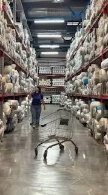
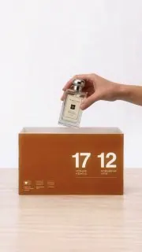

Узнать больше о коллекции жаккарда РОССИ из презентации ⬆️
МЕБЕЛЬ-2026 · РОССИЯ · Стенд 15C070
СОЮЗ-М
Дата среза карточки: 16.11.2026 11:21
Посмотреть официальную схему →
Описание на сайте компании
Ткани и комплектующие для мебели, домашний текстиль и натуральная кожа оптом и в розницу. Более 2500 артикулов. Доставка по России и в страны СН
Контакты
Сайт из официального путеводителя: www.souz-m.ruEmail: souz@souz-m.ruТелефон: +74956379077Телефон: +74956379079Телефон: +74957756106Телефон: +78007771215Телефон: +78122443992Телефон: +79629060646Телефон: +79629412052Telegram: https://t.me/Souz_M_ProfsouznayaTelegram: https://t.me/souz_m_companyMAX: https://max.ru/id5032241819_bizВКонтакте: http://vk.com/souz_mВКонтакте: https://vk.com/souz_mYouTube: https://www.youtube.com/@souz_m
Об источниках карточки
Официальный каталог подтверждает название компании, страну и стенд. Сайт и открытые контакты добавлены только при наличии строки в официальном путеводителе и успешной проверке сайта. Отсутствие контакта в карточке не означает, что у компании его нет.
Публикации связанных каналов
 Альбом · 2
Альбом · 2
Жаккард с французским характером 🔹 Тонкие ветви, изящные цветы и эстетика старинных французских садов – новая коллекция Росси воплощает благородство классических традиций в современном прочтении. Изысканный растительный орнамент, вдохновленный старинными ботаническими гравюрами, отсылает к богатому наследию французского декоративного искусства, привнося в интерьер атмосферу утонченной роскоши…
 Альбом · 8
Альбом · 8
История ткани: жаккард Мы привыкли считать, что жаккард появился в 1801 году — с появлением станка Жозефа Мари Жаккара. Но у узора, рожденного внутри полотна, история куда древнее: его корни уходят в Древний Китай , за тысячу лет до европейских мануфактур. С тех пор технология…

Видео в Telegram ↗💙 У будущего сезона постепенно формируется свой образ. В оттенках и фактурах, знакомых мелодиях и едва уловимых ароматах рождаются неожиданные ассоциации. Все они переплетаются, превращая цвет в историю, которую хочется почувствовать. Совсем скоро эта история обретет форму. Trend Box «Чувство цвета» — уже 23 ноября.…
 Видео в Telegram ↗
Видео в Telegram ↗
Новая коллекция жаккарда. Скоро 🥰
СОЮЗ-М. Мебельные тканиО выставке

С 23 по 26 ноября в МВЦ «Крокус Экспо» пройдет ежегодная международная выставка «Мебель — 2026» . На одной площадке соберутся производители, поставщики и представители мебельной индустрии, чтобы представить новинки, обсудить актуальные тенденции рынка и обменяться опытом. Ждем вас на стенде 15C070 , где мы:…
СОЮЗ-М. Мебельные тканиО выставке
В преддверии выставки «Мебель — 2026» делимся с вами новым набором стикеров для Telegram . Мы с юмором обыграли профессиональные привычки, знакомые тем, кто работает с мебельными тканями. Это небольшой спойлер того, что мы готовим к выставке. Подробности постепенно раскроем, а пока пусть язык цвета…
СОЮЗ-М. Мебельные тканиО выставке

Видео в Telegram ↗У цвета своя коллекция впечатлений… Любимый альбом, силуэт случайно замеченной вещи, хрупкое соцветие, прикосновение к ткани. У каждого из нас есть собственный архив ощущений, который со временем определяет вкус и характер пространства вокруг. 🔹 Цвет связывает эти личные находки между собой. Рядом с разными фактурами…
 Альбом · 6
Альбом · 6
Коллекция шенилла Malta в программе «Квартирный вопрос» В новом проекте «Квартирного вопроса» детская построена как цельный пейзаж — с мягкой природной палитрой, светлым деревом и архитектурой, напоминающей линию горизонта. Интерьер получился спокойным и выразительным. 🔹 Центральный элемент пространства — двухъярусная кровать со смещенными спальными местами…
Происхождение данных
Источники:
Официальный алфавитный список участников «МЕБЕЛЬ-2026» · 2026-11-13 · Строка списка: название фирмы, страна и стенд. Подробная карточка и контакты этим срезом не подтверждены.
Сайт компании, связанный с участником в официальном путеводителе · 2026-11-16 · Краткое описание взято из метатега страницы компании.